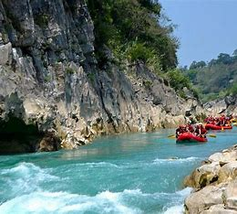
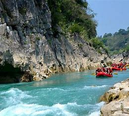
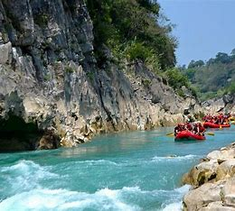

El agua fría corre por más de 60 kilómetros, formando pozas naturales que son aprovechadas para nadar y refrescarse. Todo esto entre piedras gigantes y una selva casi virgen.
Este balneario está cómodamente acondicionado con corredores elaborados en piedra, asadores, escalinatas y pequeñas represas, sombreadas todas por frondosos árboles de la región.
Tambaque es uno de los sitios preferidos no solo por la gente del municipio de Aquismón, sino también por los visitantes de los alrededores, y de otros estados de la República Mexicana, quienes arriban en familia sabedores que es un sitio apacible y adaptado para todas las edades.
